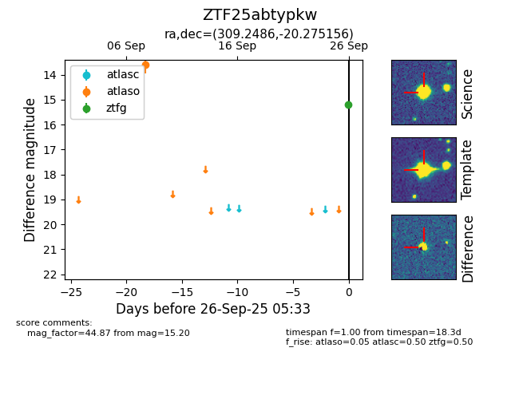

FINK: ZTF25abtypkw
Lasair: ZTF25abtypkw
ALeRCE: ZTF25abtypkw
ZTF25abtypkw (ztf,fink)
equatorial (ra, dec) = (309.2486,-20.27516)
galactic (l, b) = (24.9186,-31.94272)

last atlasc=nan, atlaso=nan, ztfg=15.20
1 atlasc, 4 atlaso, 1 ztfg detections